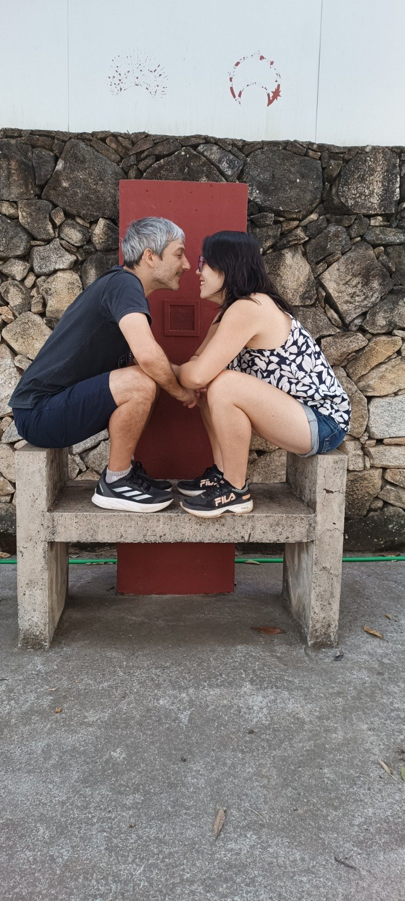
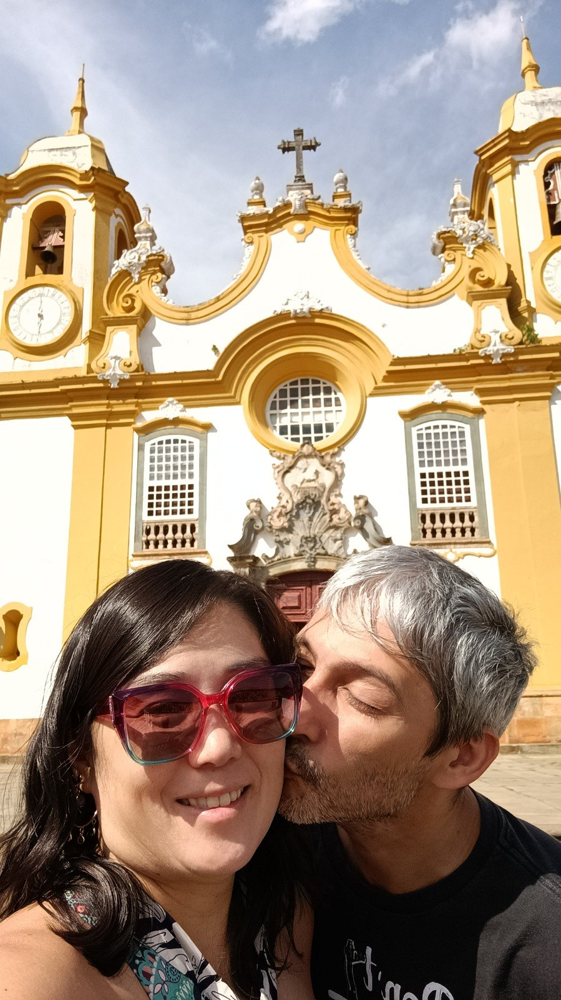

UM ENCONTRO QUE VIROU HISTÓRIA
Algumas conexões
não saem mais do ar.
Há 22 anos, a gente se encontrou em um lugar improvável. Desde então, a conversa nunca mais terminou. Agora queremos reunir pessoas queridas para celebrar tudo o que veio depois.

Uma história feita de encontros.NOSSA HISTÓRIA
Antes dos likes,
vieram os scraps.
Há muito tempo, quando a internet tinha outros caminhos e as amizades começavam em comunidades virtuais, dois destinos se cruzaram no Orkut.
Entre scraps, conversas e curiosidades, começou uma história que talvez nenhum dos dois imaginasse que chegaria tão longe.
Vieram os encontros, as descobertas, as viagens, os planos, as mudanças e todos aqueles pequenos momentos que, juntos, formam uma vida.
Vinte e dois anos depois, não estamos começando uma história. Estamos celebrando uma que já existe há muito tempo.
E queremos fazer isso perto de vocês. ♥
22 anos de conexão.
Agora é hora de comemorar offline.
RESERVE A DATA
O próximo encontro
já tem dia e hora.
A CONTAGEM REGRESSIVA COMEÇOU
Estamos esperando por esse dia!
COMO CHEGAR
Nos vemos
no Recanto.
Nosso encontro será no Recanto Santa Rita. Salve o local e planeje seu caminho com tranquilidade.
Abrir localização no Google Maps ↗Recanto Santa Rita · Abra o mapa para ver a rota e as opções de navegação.

UM CARINHO, SE QUISER
Sua presença é
o nosso melhor presente.
De verdade: o que mais queremos é comemorar esse dia com você. Mas, se também quiser nos presentear, deixaremos uma opção simples e direta, sem intermediários ou taxas de plataformas.
Presente via Pix
Em breve, colocaremos aqui nossa chave Pix e um QR Code para facilitar. A contribuição será enviada diretamente aos noivos.
pix-teste-nao-utilizar@example.comEsta chave é fictícia e será substituída antes da publicação.Sem lista em loja, sem comissão: se desejar, direto para nós. E sem obrigação alguma. ❤️
VAI SER BOM TER VOCÊ COM A GENTE
Podemos contar
com a sua presença?
Para nos ajudar a organizar tudo com carinho, pedimos que confirme sua presença pelo formulário. É rapidinho!
Confirmar presença ↗O formulário de confirmação será disponibilizado em breve.
21 · 02 · 2027
Esperamos você
para celebrar com a gente.
Wanderley & Mitiko
✿